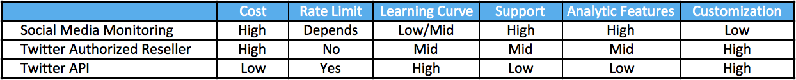
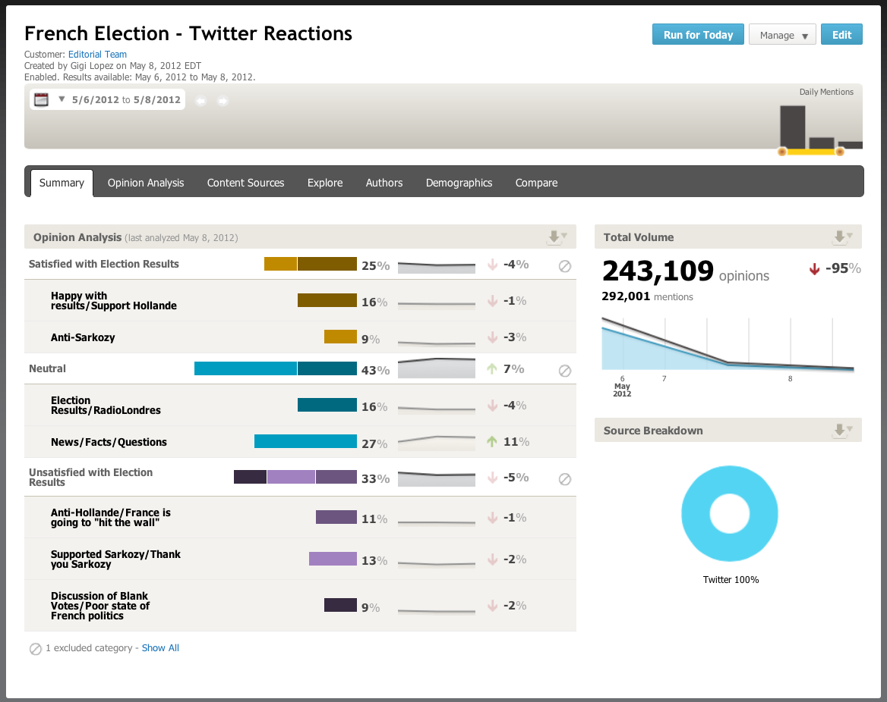
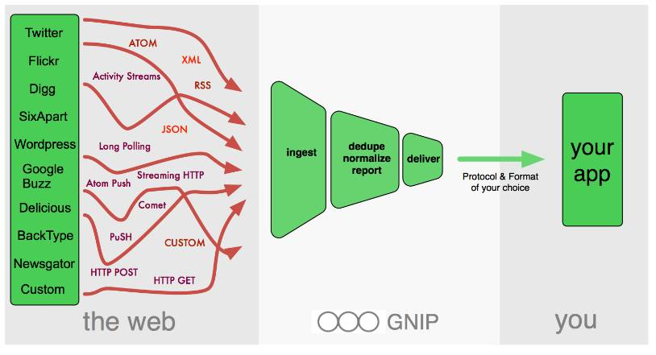
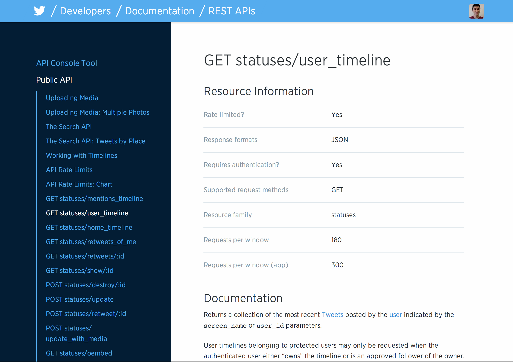

Using Twitter Data for
Research
Issues of Data Retrieval, Management, and Processing
The Social Media Landscape
Opinion has never been this cheap, timely, or abundant
- Harder to acquire data from traditional survey methods
- falling response rates
- inadequate sample frames
- Huge opportunity for survey researchers to harness insight with social media

- One of the most important social networks due to utilization and data access
- Twitter users are only 18% of internet users and 14% of the overall adult population
- Their demographic profile is not reflective of the full population
- Nonetheless, Twitter data has been used effectively in correlating with flu outbreaks, movie box office sales, opinions about politics and the economy
Twitter Data Access
Three main ways to get Twitter data:
Social Media Monitoring
(Radian6, Crimson Hexagon, etc.)

Twitter Authorized Resellers
(GNIP, Datasift)

Twitter API
Twitter API: REST vs. Streaming
- REST API - To get information, user must specifically request it
- Well over 50 different REST API "Resources"
- Streaming API - Once request is made, provides continuous stream of updates without further input from user (up to 1% full twitter stream)
- Has "Public", "User", and "Site" streams
Twitter Data
- Information about a user
- 18,000 profiles per 15 mins
- A user’s network consisting of his connections (Friends, Followers)
- 7500 user ids per 15 mins
- Tweets published by a user
- Up to 36,000 tweets per 15 mins
- Also available from Streaming API
- Search results on Twitter
- Up to 18,000 tweets per 15 mins
- Also available from Streaming API
- Location of Tweets
- Location for users/tweets embedded in objects (~1% complete)
- Can also search tweets for a specific area
Connecting to Data
- First, need authentication to connect to Twitter (OAuth)
- Next, need a general purpose programming language to talk with both the API and your database
- Ex: Python, PHP, JavaScript/Node, Ruby
- Many libraries available to ease in connecting to the API
- Ex: Twython
- Likewise, you’ll need a library to connect to your database
- Ex: PyMongo, to integrate with MongoDB
Twitter Data Storage
- Data stored as JSON (JavaScript Object Notation)
- Key-Value pair
- Allows for nesting of fields and is flexible
{u'_id': ObjectId('53d11ddd28975720fa77c8aa'), u'contributors': None, u'coordinates': None, u'created_at': u'Thu Jul 24 14:10:49 +0000 2014', u'favorite_count': 2, u'favorited': False, u'geo': None, u'id': 492310941657481216L, u'id_str': u'492310941657481216', u'lang': u'en', u'place': None, u'retweet_count': 0, u'retweeted': False, u'text': u'i need to doze off before i doze off \n\U0001f634\U0001f634', u'truncated': False}
NoSQL example: MongoDB
- Document-Oriented Storage
- Index Support
- Straightforward Queries
- Speed
Analysis

Complications!
- Rate limits (15 minute window)
- Public vs. Private
- Non-trivial Data Preparation
- Error codes and Responses

Conclusion
- Although collecting, storing, and analyzing Twitter data can be complicated, surveys are also complicated and labor intensive
- Twitter data is not perfect - for instance, Twitter may decide to pull the plug on the public API, leaving everybody in a lurch.
- Nonetheless, with the continuing trend of falling response rates and inadequate sampling frames, getting cheap and timely data without burdening respondents is an enticing proposition.
Questions? Feel free to reach out to rchew@rti.org